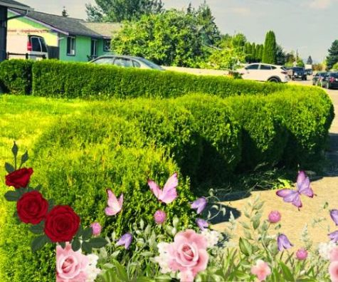

What is Curb Appeal
Curb appeal is the first impression your home makes from the street. It refers to the overall attractiveness of a property’s exterior, including the landscaping, paint, front door, driveway, and outdoor decor. A well-maintained curb appeal not only makes a home more inviting but also increases property value and attracts potential buyers or visitors. Simple improvements like freshly cut grass, vibrant flowers, clean pathways, and stylish entryways can significantly enhance curb appeal. 🌿🏡✨
- 🏡 Landscaping: Well-maintained lawns, trimmed hedges, and colorful flowers.
- 🚪 Front Door & Entryway: Fresh paint, stylish hardware, and a welcoming design.
- 🚗 Driveway & Walkways: Clean, crack-free surfaces with proper edging.
- 🌿 Outdoor Décor: Planters, lighting, and seasonal decorations for charm.
- 🎨 Exterior Paint & Siding: A fresh, clean, and modern color scheme.
- 🔲 Windows & Roof: Sparkling windows and a well-kept, damage-free roof.
- 🔆 Lighting: Proper outdoor lighting for safety and aesthetics at night.
What about Real Estate?
Curb Appeal is an important part of the value of your home! According to the National Association of Realtors projects like landscaping and exterior improvements
can provide a 100% + ROI in some cases.
Reasons for Curb Appeal
- Higher Home Value
- Faster Sale Time
- Affordable Upgrades with Big Impact